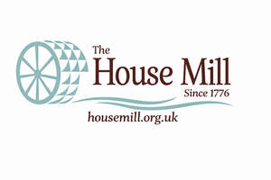

Trade Mark Journal No.2026/010 6 March 2026
UK00004343197 20 February 2026 (35,36,37,39,41,43,45)

- Class 35
- Arranging promotion of charitable fundraising events.
- Class 36
- Fund raising (Charitable -); Trust administration; Trust management; Unit trust trusteeship; Providing information relating to charitable fundraising; Administration of trusts; Real estate trustee services; Fund-raising; Fundraising and sponsorship; Political fundraising consulting; Charitable fundraising; Fundraising services; Charitable fundraising services for underprivileged children; Charitable fundraising by means of entertainment events; Organising of charitable collections; Charitable collections; Fund raising for charitable purposes; Philanthropic services concerning monetary donations.
- Class 37
- Providing building construction information via a website; Renovation and restoration of buildings; Restoration of buildings; Buildings (Restoration of -); Building restoration; Renovation of buildings; Buildings (Renovation of -).
- Class 39
- Organization of sightseeing tours; Organisation of sightseeing tours; Organization of tours.
- Class 41
- Arranging and conducting of educational events for charitable purposes; Arranging and conducting of entertainment events for charitable purposes; Arranging and conducting of live entertainment events for charitable purposes; Providing entertainment information via a website; Arranging and conducting of entertainment events for charitable fundraising purposes; Organisation of educational events; Organisation of exhibitions for educational purposes; Museum exhibitions; Presenting museum exhibitions; Museum services; Museums; Providing museum facilities; Provision of museum facilities; Running of museums; Providing museum facilities and services; Gardens for public admission; Organising of educational exhibitions; Cultural, educational or entertainment services provided by art galleries; Organising of education exhibitions; Organisation of guided educational tours.
- Class 43
- Cafe services; Cafés; Serving food and drink in Internet cafes; Restaurant services incorporating licensed bar facilities; Take-away food and drink services; Catering of food and drinks; Room rental for exhibitions; Provision of conference, exhibition and meeting facilities.
- Class 45
- Providing information about legal services via a website.
House Mill Trust Limited
Representative: Amar Lodhia